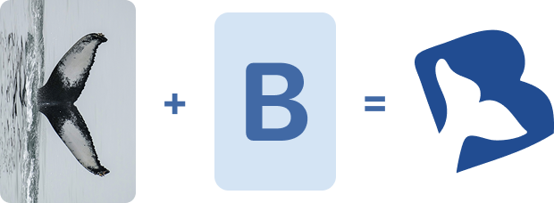
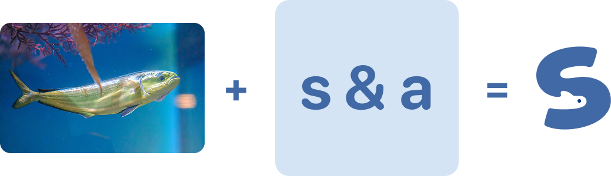
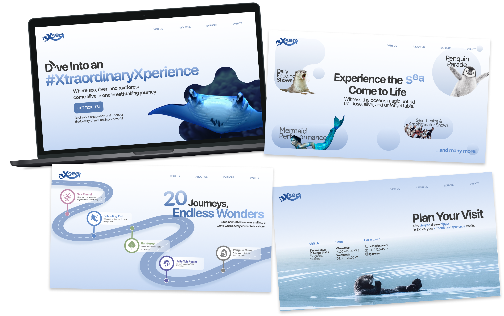
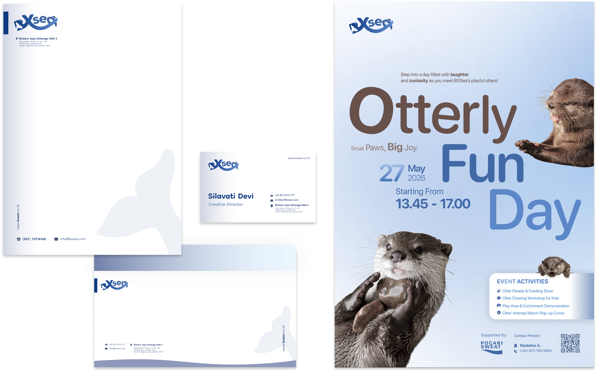

Concept Redesign · 2025
Concept Redesign · 2025
BXSea
About the project
BXSea is an indoor aquarium and marine life attraction located in
Bintaro, Indonesia, offering visitors an immersive experience to
explore diverse aquatic ecosystems and learn about marine
biodiversity through interactive exhibits.
Previous Logo:
Behind the shapes
Logo conceptThe “B” & the tail fin

The “B” shapes the tail fin, creating a symbol that can also be used on its own.
Rounded aquatic shapes

The rounded aquatic shape gives the logo a warm, family-friendly feel.
An ocean current
The lower curve of the ‘X’ flows like an ocean current.
Landing Page Redesign
UI / Web designI redesigned the BXSea landing page to create a more cohesive and engaging digital experience, aligning the aquarium's visual identity with the redesigned logo while improving visual hierarchy and presenting key information in an accessible, user-friendly layout.

Live website preview
Feel free to explore and scroll inside the redesign!Brand touchpoints
Stationery & PosterI also applied the redesigned BXSea visual identity across corporate stationery touchpoints to establish a consistent and professional brand presence. Additionally, I designed event promotional posters that communicate key information while maintaining visual coherence with the brand's overall identity.
